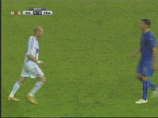
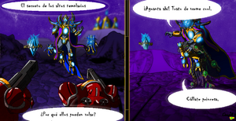

Starcraft 2
 De: La Frikipedia, la enciclopedia extremadamente seria.
De: La Frikipedia, la enciclopedia extremadamente seria.

|
ATENCIÓN
Este artículo contiene demasiados tachones y en vez de provocar gracia, parece los apuntes de un niño de preescolar. Ya puede ser porque el autor es un novato, bien es un topo sin vista, o simplemente algún n00b que se cree que abusar del chiste mierdoso mola y no se da cuenta que jode bastante el artículo. Así que coge la goma de borrar y discusión del artículo, puede que te ayude en algo.
|
De la serie Videojuegos:
Starcraft 2

Las Estrellas de Artesanía vuelven recargadas.
| Desarrollado por:
|
Activision
|
| Distribuido por:
|
Vivendi Games.
|
| Diseñado por:
|
Bri$$ard Entertainment.
|
| Motor
|
BioSiege Tank Psienergético.
|
| Género(s)
|
Crea unidades, mata unidades, crea edificios, mata edificios,gasta dinero.
|
| Fecha de lanzamiento:
|
Hace algunos siglos.
|
| Modos de juego:
|
individual, multimediaplayer.
|
| Requisitos:
|
Una PC,280 Euros
|
| Disponible en:
|
Ahora solo está en beta y solo los pro's del StarCraft I lo tienen, pero se lo puedes comprar al negro de la esquina.
|
| Formatos:
|
DVD y BD.
|
| Edades:
|
Ni que fuera Age of Empires, aqui hay de 3 Zerg, Terran o Protoss.
|
| Puntuaciones:
|
¿Te importa?
|
ZERG RUSH 2.0 KEKEKEKEKEKE!!!!!
«Terrible terrible Damage!!»
~ Dustin Browder acerca de tu ejército a punto de ser Pwneado.
«El Battle.net 2.0 ofrecerá nuevas posibilidades y reducirá el lag en todo sentido»
~ Blizzard sobre el Battle.net 2.0
«Se ha reducido de forma significativa el oro obtenido en las búsquedas»
~ Blizzard hablando de tu dinero.
Después del StarCraft I y antes del III muchos se harán preguntas frecuentes como... ¿Cómo puedo avanzar? o ¿Cuánto es 2+2 entre la potencia de PI al cuadrado de la reversiva al triple de la velocidad de la luz? Bien, pues si te gusta Stracraft y eres un noob, este es tu lugar.
StarCraft 2 más bien es el "Nombre" que se le da a tres juegos: StarCraft II: Wings of Liberty StarCraft II: Heart of the Swarm y StarCraft II: Legacy of the Void. La cosa es que Blizzard quería ganar más pasta y por eso dividieron el juego en tres para venderlo en partes y hacernos la vida una mierda a los fans. Pero bueno, es lo que hay.
Argumento
Desde que Kerrigan y los zergs arrrrrrrasaron con su puto rush todas las demás razas, no pasó NADA por 4 años. ¿La razón? En ese momento Blizzard Blaisard sacó Guerra de los Mundos o world of warcraft cataclism pero no lograron nada debido a que el gerente de seguridad de blizzard es Arthas que los eliminaba a hostias; a los coreanos frikis se les ha hecho imposible verificar este hecho, puesto que terminan vendiendo su alma por una copia barata de frostmure.
Tambien se dice que Kerrigan se dio cuenta de que 1998 ya había pasado y que el peinado de gokú ya no se usaba y que por este motivo se dió un descanso de 4 años para meterse el dedo encontrarse consigo misma y un nuevo estilo algo mas cool y sexy. Existe otra teoría ¿mas? dentro de la cual se incluye un complot desarrollado por los xel'naga para enemistar a las tres razas, al final del juego se revela que los xel'naga eran nada más ni nada menos que una coalición de japoneses, gamers y coreanos; en resumen frikis sin vidas.
Argumento "Real" (¡SI COMO NO!)
James Raynor un es convicto violador Libertador, preocupado por la escasez de marihuana por que su pueblo esta siendo destruido por robotsuelas zerg's gusanos que viven debajo de tu cama por ahi, se une a Jar jar Binks Arcturus Mengsk un ladron pseudo politico renegado, odia al actual gobierno de obama la Confederacion y preparó a su pelotón para tratar de tirar su imperio de prostitutas para que bajen los precios a pedradas sin mucho exito pero despues de que llego Bender con su ejercito de robotsuelas de clones los sith lograron derrocar a obama la confraterniad .
luego de que Kerrigan (la puta novia de Jimmy) y Mengsk follan poniendole cuernos a jim llevan una mision donde Kerrigan le cuenta a mengsk que tiene un hijo suyo Mengsk la deja abandonada a su suerte en una estacion espacial atacada por Kuthulu Zergs. 4 años despues le crece pelo a jimmy y aparece su esclavo sexual amigo Tychus Finn (no es el de hora de aventura?) y le platica que tiene un plan para joder un poco a Mengsk y hacer buen dinero trabajando par a una respetable empresa narcotraficante llamada Mara salvatrucha (MS-13) Moebius recolectando my little pony collectors edition unos materiales para crear un sustituto genérico de la estrella de la muerte, luego vio a los zerg que estaban acompañados de Kerrigan que es una perra Zerg mejor conocida como La reina de pajas espadas, la cual aparecio con nuevo peinado y Raynor la quiso violar curar por eso lucha con ella y Viola rescata convirtiendola en una actriz porno de tetas grandes humana.
Y al final Jim encuentra todos los my little pony collectors edition objetos regeneran la estrella de la muerte se coje a Sasha Grey quien tambien le mete cuernos con Mengsk y Jim se suicida y se vuelve un zombie que ayuda al rey Lich a destruir la alianza y Mordor*.
Fuente: El juego que descargue de internet estamos hablando de StarFuckWars.
- Referencia a WoW (World of WStarwars)
Recursos
Los recursos son el terror de todo jugador, siempre faltan en el momento que se necesitan, y no son tan efectivos como un Supply Depot, un Pylon o un Overlord. Pero es el motivo de vida de los VCE's (esclavos canis), Sondas(copias baratas de R2 D2) y Zánganos(cucarachas super-desarrolladas) a quienes no sirven de absolutamente nada cuando se acaban los minerales.
Minerales
Los recursos son unos cristalitos azules que siempre, siempre, SIEMPRE llaman la atención de algunos (Principalmente turistas) a ver tu base, pero luego les espera una muerte lenta a manos de tus trabajadores. Prácticamente los vas a necesitar para todo, edificios, unidades terrestres, unidades aéreas, condones, torretas... etc. Así que no van a ser suficientes los que te vienen al principio y necesitarás aventurarte a buscar más. Lo nuevo son unas piedritas de oro que son los Minerals Golden Version Deluxe, Collector Gem, son las más dificiles de conseguir (se consiguen en el Casino Zerg), pero bueh; dicen que son mejores, solo por el color racistas.
Gas Vespeno pedos
Igual que en el StarCraft original, el Gas se saca de unos volcancitos con flatulencia. Sirve prácticamente para hacer todas las unidades mágicas y todas las mejoras tan necesarias para unidades y edificios. A pesar de ser tan inútil, sigue necesitando 3 trabajadores mínimo y un extractor principal (Sí, así de especialito es) Lo bueno es que ahora se pueden re-abastecer cuando se quedan sin pedos, gastando una cantidad estúpidamente grande razonable de minerales. (Pero los minerales no se recuperan, AGGG)
Depositos de suministros, Amo supremo y Pylones
Gracias a las nuevas actualizaciones del Sc2 ya no es necesario tener que usar una gran y estupidamente inmensa cantidad de terreno para poder construir los hoteles de tus soldaditos aunque nunca llegan a sobrevivir mas de una hora y difrutar sus camas con un par de guarras y cervezas.
Siempre en los momentos mas importantes de tu vida friki, cuando estas en medio de una batalla
Tambien tienen otras funciones como abastecer de marihuana a los soldados terran, energia electrica para tus bases protos y mermelada para endulzar a tus zerg.
Dinero
Debes pagar para tener las 3 putas expansiones del juego.
Razas
En StarCraft 2 controlaremos las razas totalmente nuevas y sin repetir que veremos a continuación:
Son los humanos de siempre, con unos edificios sucios y unidades con trajes como los de Halo pero mucho más gordos. Pueden volar y invocar a Cyberjesús cuando su base es mínimamente aceptable. Sus edificios ahora son mucho más bonitos, pues son más grandes, más gordos y más redondeados. Son todos unos ciborgs(traga verjas, prostitutos, travolos y maricones), que van con pistolas gigantes(esas no las que hacen daño) y con unos trajes de mierda(debaje¡o del cual llevan falda y sujetadores).
Unidades Nuevas
- Fortaleza
Platanaria Planetaria: Finalmente la cochina nave que tienes como centro de mando se podrá actualizar a esta...cosa. Por primera vez se podrá defender sola asi que anda a chingar a tus enemigos con todas las unidades que tengas ya que cuanta con misiles shúper jodedores que les darán por culo a todos los chinos frikis que se acerquen a tu base.
- Thor:
dios del trueno de la mitología griega y germánica que tu quiseras controlar pero no puedes por noob y por que no está en el puto juego asi que no preguntes estupideces.Donde estaba...ah, si en la explicación, ¿cansado de tus goliats? bueno pues puedes actualizarlos a esta jodedora unidad que hace ver a los goliats como figuras de acción. Es como el Chuck Norris de los mechas.
- Sensor Dome: GPS que te permite ver unidades ocultas, pedir una pizza, molestar a tu vecina, usar la linea hot, etc.....
- Viking
África Fighter: el primo hermano de Optimus Prime se quedó sin empleo y los de Blizzard le propusieron ponerlo en el juego a cambio de que le harían su propia serie animada (Poco tiempo después desapareció misteriosamente...)esta unidad puede atacar por tierra en forma de mecha o por aire en forma de una super-hiperrecontrafantástica nave espacial (que original, no?)
- Actualización para el Depósito de Suministros: luego de una sobrecarga de minerales y gases vespreno, estos adquirieron la habilidad de robarle las madrigueras a los Zerg de forma pacífica y usarlas para ocultarse
los muy mamones . Además, contrataron un vidriero Terran (no me preguntes como mierda llegó al juego) para que les hicieran una barrera protectora de SIDA
Zerg
Los Zergs volvieron, nena, y volvieron para quedarse. Los Zergs ahora son mucho más feroces, tienen edificios mucho más feos, unidades mucho más feas, transformaciones mucho más feas y... seh, todo es feo. Pero da igual, hay muchos frikis que siguen diciendo que los Zergs son lindos, y cuando digo frikis me refiero a los fans de los Rushes y las jugadoras de StarCraft. Comienzan con gusanos y con gusanos acaban, estos son los frikis del juego, raros hasta la medula eso si cuidado, que son mas peligrosos de lo que parecen (a veces los gusanos tragan cosas que no deben como sus amiguitos los terran y los protoss).
Unidades
Zerg
- Zerguezno (Zergling): También llamado Crackling cuando está drogado. Es lo más parecido a un Zealot pero en estilo Zerg, pero como son muy enanos nadie lo quiere como "representante". Igual, los zerglings son básicamente de papel y con un poco de agua mueren fácil, pero siguen siendo muy sencillos de crear y por eso generalmente se envían rushes de MÁS DE 8000 zerglings.
- Hidralisco: Los hidraliscos antes eran mamíferos perezosos, pero un día la Supermenta los vió pastar en un campo y dijo "¡Que se haga la pus!" y le salieron escamas, cuchillas, dientes, mandíbulas, y unos ojos rojos que atemorizan hasta a mi mami. Pero como estaba en uno de sus momentos sin ideas, como un frikipedista sin idea de como continuar un artículo, hizo que lanzaran mocos verdes. Ahora en la expansión, se revela que en realidad son "espinas" que antes eran su protección. (Excusas baratas)
- Uetzi (Pesteling): Si todas las unidades Peste Negra (
felicidades idiota) para mutarlos en esta cosa rara mezcla de cucaracha, armadillo, escarabajo y cani que apenas puede moverse con las pústulas enormes que tiene. Está tan deprimido por la asquerosa vida que tiene que su ataque es suicidarse, mientras te corroe con los asquerosos ácidos que tienen sus pústulas. En otras palabras, es un emo kamikaze.
- Infestadores: Son unos hijos de su reputa madre que tienen la capacidad de sacar un súper
pene tentáculo llamado parásito neural el cual te chinga a una de tus unidades y la pone en tu contra, es decir, si tienen un thor y uno de estos malnacidos se aparece con su pene tentáculo, puedes estar seguro que la mitad de tu ejercito se irá a donde don sata. además, los malparidos se mueven bajo tierra, en tonces te pueden violar atacar cuando menos lo esperas
- Mutalisco(Mutalisk): Pene volador de ataque medio chingao, lanza esperma espacial que alcanza a tres unidades por cada eyaculación. Son el paralelo de los zerglings, solo en masa sirven y mueren mas rápido que cuando Chuck Norris te da una patada giratoria.
- Ultralisco : Los mas cabrones que Ventisca logró crear, estos son duros como un nokia y nada los eliminaba y estabas jodido si estos aparecian por esas mierdas de nydus en de tu patio trasero te violaban con sus cuchillas pero ahora decidiero que era muy pro para poder ser destruido y sacaron unidades que le dan por culo al Ultraolisco.
Protoss
Los Protoss no han destacado demasiado. Ahora tienen nuevas unidades más guays, tienen mejores animaciones y sus edificios siguen siendo igual de amarillos pero más imponentes. Ahora tienen un look más Azul-oscuro y sus unidades dicen frases más deprimentes, lo que se podría traducir como que ahora los Protoss son Emos. Son los super chchi piruli de chacilandia protoss como siempre azules(¿asfixia autoerotica?) que van con unos pañuelitos(parecen gitanos) y unas armaduras sexys para joder a los terran y los zerg.
Unidades
Sus unidades son basicamente unos muertos de hambre anorexicos sados sodomisadores azulados de chachilandia
Xel'Naga
¿Qué? ¿Te creiste que por que estaban aquí los Xel'Naga iban a ser una raza seleccionable? ¡Pues no! Siguen siendo los mismos noobs que jugaron a ser dioses y accidentalmente craron a los Protoss, y cuando los Protoss llegaron a la adolescencia y se rebelaron, los Xel'Naga usaron Azucar, Flores y muchos colores (Y un poco de Sustancia Z) Para crear a Los SuperZerg.
Zerg
- Zergling (Zergling): También llamado Crackling cuando está drogado. Es lo más parecido a un Marine o a un Zealot pero en estilo Zerg, pero como son muy enanos nadie lo quiere como "representante". Igual, los zerglings son básicamente de papel y con un poco de agua mueren fácil, pero siguen siendo muy sencillos de crear y por eso generalmente se envían rushes de MÁS DE 8000 zerglings.
- Hidralisco(Hydralisks): Los hidraliscos antes eran mamíferos perezosos, pero un día la Supermenta los vió pastar en un campo y dijo "¡Que se haga la pus!" y le salieron escamas, cuchillas, dientes, mandíbulas, y unos ojos rojos que atemorizan hasta a mi mami. Pero como estaba en uno de sus momentos sin ideas, como un frikipedista sin idea de como continuar un artículo, hizo que lanzaran mocos verdes. Ahora en la expansión, se revela que en realidad son "espinas" que antes eran su protección. (Excusas baratas)
- Mutalisco(Mutalisk) Unidad voladora de ataque medio.
- Pesteling(Baneling) El pesteling es una criatura que posee unos sacos tan llenos de fluido que apenas puede caminar. En cambio, se mueve enroscándose formando una bola hermética que rueda. Sin embargo, este desgarbado aspecto oculta el hecho de que es un organismo extremadamente peligroso,
Protoss
 El poder de carga de un fanático.
- Fanático(Zealot): Los fanáticos son personas entrenadas en el arte del reggaeton, la drogay el uso de anillos de oro y todas esas mierdas. (Por eso son dorados) Y por eso, no importa de qué sean fanáticos, son expertos en armarla grande y liarse a ostiazos con cualquiera que se les cruce. Y ahora tienen superpiernas que les ayudan a jugar mejor al futbol. Se están preparando para liarla en el próximo mundial con superpatadas megaveloces. Cada vez que piensas mal de los frikis, muere un fanático. Pero como los fanáticos son canis, ¡Es mejor que los frikis sean odiados!
- Inmortal(Inmortal) Cuando se armó la jerga zerg en Aiur y todos los Protoss fueron expulsados por el gobierno Kerriganista, las fábricas de dragones quedaron en poder del Zergalona y fueron usadas para crear híbridos. Y por eso los protoss se quedaron sin dragones. Quedaron algunos dragones, que no se parecen en nada a los dragones normales y por eso los fans sabemos que no lo son. Pero bueno, los "dragones" que quedaron se convirtieron en Inmortales.
(Cosa rara, deberían haber quedado más dragones, con los Dragoon Rushes...)
 En StarCraft 2 se revela una de las dudas más planteadas por los jugadores. (Click para ver con detalle)
- Acechador(Stalker) Cuando los Dragones se murieron, los templarios tétricos adoptaron la religión Romana y los plagiaron. Así, crearon unos mini-plagios de los patones de la Guerra de los Mundos, pero con aire de Dragón, y cuando los tétricos se morían los ponían en una de estas para que se sigan rompiendo el alma por el imperio.
- Prismas de Fase(Phase Prism): Navecita que se especializa en hacer varias cosas con ayuda deltiempo y del espacio. (Mentira, son el tabaco y la marihuana)
- Fénix(Phoenix) El fénix es el reemplazo de los Pirat... Corsarios y de los Exxxploradores Protossoarios. Sin embargo son naves lentas, extremadamente caras y sumamente inútiles. Por lo que dejan a los protoss sin fuerza aérea. Las aerolíneas son un gasto exagerado hoy en día.
- Coloso(Colossus) Al creador de StarCraft y a los Protoss les gustó tanto la película de La guerra de los mundos que, luego de hacerse una paja, decidieron plagiarles los autitos patíticos galácticos. Los colosos NO tienen un extractor de sangre ni nada de eso, pero tienen unas patas de Spiderman, tiran rayos capaces de acabar con cualquier rush y son altamente caros. Es por todo el oro rapero que llevan.
- Rayo de tránsito (Warp Ray) Un rayo de tránsito es
Un rayo que transita ¬¬ una nave con tres patas pero que no camina. Hay un cristal en el centro que no se sabe como carajos se mantiene flotando. De las tres patas lanza un poder diferente, la primera es la del poder psiónico de los Altos Templarios (Los que usan zancos o tienen Templarios Tétricos debajo para flotar) , la segunda es la del poder de las energías del vacío de los Templarios Tétricos (El poder de la carne) y la tercera solo Diox sabe. Poco a poco se abren como pétalos de flor gay y van desencadenando un poder over.
- Arconte Crepuscular (Twilight Archon): Desde que los Protoss se hicieron más emos, los Templarios Tétricos Oscuros y los Altos Templarios Gays se pusieron a leer Crepúsculo. Y sucumbidos por el poder del amor, ahora se pueden fusionar entre ellos (AltoTemplario+AltoTemplario, TemplarioTétrico+TemplarioTétrico y AltoTemplario+TemplarioTétrico) y crear un Arconte Crepuscular. Es tan fuerte como el anterior que estaba hecho de semen, pero no tiene poderes. (Ya no más robarte un SCV o un Zángano y crear tu propia raza de híbridos ilegítimos)
- Templario Tétrico (Dark Templar): La raza más cool de los Protoss son los Templarios Tétricos. O bueno, lo eran. No se llevan bien con los Fanáticos pues estos son canis y los Templarios Tétricos ahora son emos. Ahora se dividen en dos razas, los Lenassa y los Zer'Atai. Los Lenassa son emos que se dedican a cortarse las venas con sus cuchillas warp y mirar siempre mal a los demás, y los Zer'Atai son más cool por que siempre van con una cuchilla como la de La Parca y llevan los huesos de Terrans y Zergs muertos, y aunque sean emos, se dedican a "terminar el espiral de sufrimiento que es la vida a todos sus amigos". (Véase, los matan)
- Nave Nodriza (Mothership): El reemplazo del árbitro. Está lleno de Altos Templarios Gays. Antes eran usadas para saber historias, explorar y etc. Cosas que a nadie interesan. Pero ahora son mucho más útiles y hacen muchas cosas que antes no se podían, como destruir, matar y arrasar en el mundo. Tienen campos de fuerza, hacen invisibles hasta a edificios y se la pasan tope guay. Lo jodido es que cuestan muchísimo y solo se puede tener una a la vez.
- Portanaves(Carrier): Las carriers han vuelto y tienen ahora un conductor mucho más sexy que el gordo de voz grave que antes. Ahora brillan más y tienen un diseño más futurístico, pero siguen tirando 8 navecitas que tiran mierda. Y ahora cuestan más, así que ya no valen la pena.
Observador(Observer) Función: Observar Explorar. Son las mismas navecitas de siempre que son invisibles y pueden sintonizar a los 40 Principales, pero ahora tienen un look giratorio que hace notar que SÍ son aéreos y que no atraviesan todo como Diox.
¿Sabías que...
- ... Jim Raynor
ya no tiene la cabeza de Huevo de antes?
- ... Kerrigan está más sexy, con muchas feromonas
Tiene un culaa.... y una tet.... :Amazed: ?
- ... Va a salir una mujer protoss? (OMG)
- ... CHuck Norris es el padre de Jim?
- ... tu eres un zerg?
- ... tienes un zerg que entra y sale a gusto de tu
culo Cuerpo?
- ... Jim Raynor conocio a marty mcfly y al doc?
- ... Tienes un Zerg entrando en tu
culo Cuerpo en este momento?
- ... Aun que lo nieges te esta gustando (gay!)?
- ... El primo de tu sobrino hijo del hermano de tu tio por parte de tu madre que es adoptado juega Starcraft 3?
- ... Los protoss son dicipulos de Chuck Norris y Goku?
- ... Sarah Kerrigan antes era
monja humana?
- ... El Zerg que entro por en tu
culo cuerpo esta defecando en tu estomago?
- ... La unica cura es un golpe de chuck norris?
- ... Mientras juegas Starcraft 2 tu novia se esta follando a un carpintero primo de tu hermanastro por parte de tu tio adoptado que es hermano de tu madre pero el no sabe que es adoptado?
- ... No soy tu pero eres aquel quien dijo ser yo?
Enlaces Externos
|
|
 Shooter Shooter
 Terror Terror
 Velocidad Velocidad
 Rol Rol
 Estrategia Estrategia
 Aventuras Aventuras
 Fight! Fight!
 Clásicos Clásicos
 Deportivos Deportivos
 Aventura gráfica Aventura gráfica
 Novela visual Novela visual
 Personajes de videojuegos Personajes de videojuegos
|
Autor(es):
- Ballesss
- Zulhen
- Kablo
- Kevrochi
- Magiclopez
- Harry El del Pote
- 62666
- Gñapero Solitario
- Kampoz
- Kantuva
Frikipedia 2005-2016, Licencia
GFDL 1.2 - Extraído por FrikiLeaks